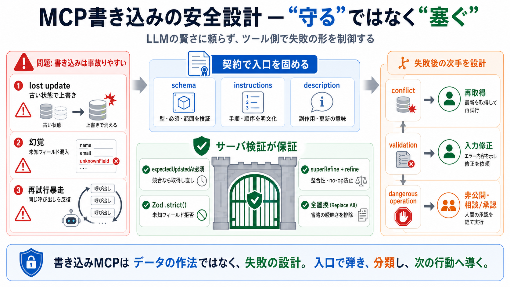

典型1（更新事故）
lost update：古い状態前提で上書き

“書き込み”を渡す安全設計
LLMにタスク更新などの“書き込みツール”を使わせるときは、LLMの賢さに頼らず、 ツール側で失敗の形を制御する設計が要点です。 （Model Context Protocol / MCP）
失敗は起きる
読み取り→更新の間に状態が変わる、幻覚で存在しないフィールドを送る、失敗後に同じ呼び出しを繰り返す。 これらは“読み取り専用”では目立たず、“書き込み”で顕在化します。
安全は契約で作る
MCPサーバの「schema・instructions・description・検証」を契約として設計し、 失敗したら次の行動が分かる“分類”と“戻り方”を用意します。
核：競合制御
更新ツールの引数に expectedUpdatedAt を必須化し、
読み取り→更新の間の変化があれば“不一致”として失敗させます。HTTPの ETag/If-Match と同型です。
契約の分離
schemaだけでは順序や整合が表現できないため、ツール単位で“運用仕様”を契約として分離します。 これが、LLMがUIを見ない前提でのズレを減らします。
幻覚を“黙殺しない”
Zod の .strict() で未知フィールドを拒否し、
「指定したのに反映されない」事故を検知可能にします（エラーで止める）。
意味の整合
状態間の整合性は .superRefine() で検査し、
変更項目がない更新（実質 no-op）を .refine() で禁止します。
更新の曖昧さを消す
部分更新を避け、テンプレート更新は全定義必須の“全置換”に寄せます。 省略の意味（維持/クリア）を契約から排除して事故を減らします。
再試行の暴走を抑える
エラー応答は、エージェントが読み続ける前提で「原因の分類」と「次に取るべき行動」に結びつく形にします。
ただし retryable を誤って解釈させない設計が必要です。
道具を減らす
依存関係の解除のように突破を促しやすい操作はツールとして公開せず、 相談・提案へ倒して人間側の意思決定に寄せます。
“守る”ではなく“塞ぐ”
description / instructions は契約として誘導になるが、必ず守られる保証ではありません。
最終的な安全性は schema 検証（例： .strict() ）と整合性チェックで担保します。
再現できるチェック
書き込みMCPは「データの作法」ではなく「失敗の設計」です。
expectedUpdatedAt を必須にし、.strict() と整合性検証、全置換、エラー分類で事故を減らします。
expectedUpdatedAt で入口拒否.strict() で未知フィールドを検知可能にNo references found